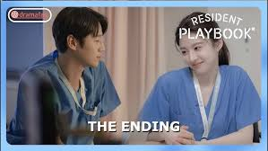

Episode 1
I-yeong returns to the hospital, facing debt and tough beginnings.
Episode 2
Residents hit their breaking point; I-yeong proves herself.
Episode 3
Unexpected emergencies test I-yeong’s courage and instincts.
Episode 4
Nam-kyung cracks under pressure; secrets begin to surface.
Episode 5
A sudden crisis leads I-yeong to gain unexpected trust.
Episode 6
Past wounds resurface, and bonds start forming among residents.
Episode 7
Jae-il shines during an emergency; I-yeong faces a difficult loss.

Episode 8
Relationships deepen as the residents face growing challenges.
Episode 9
Sa-bi learns empathy; I-yeong finds comfort in small wins.
Episode 10
Truths are revealed, and support systems start to grow.
Episode 11
The residents face their toughest shift yet — together.

Episode 12
With warmth and healing, everyone gets their happy ending.